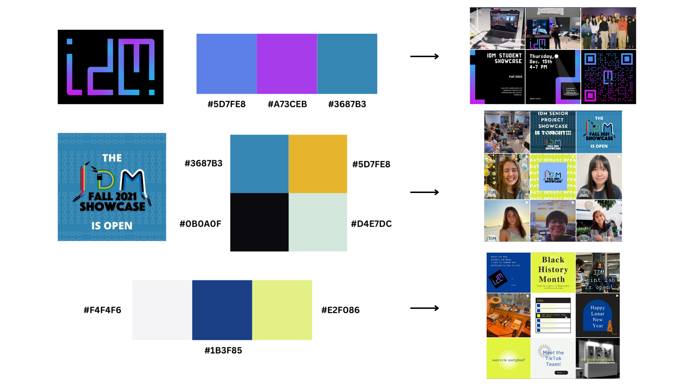

NYU Integrated Design & Media Social Media Manager
Project Summary
During 2021, I was recruited as a brand manager and content creator for the New York University Integrated Design & Media (IDM) social media team.
My responsibilities included creating video content for our TikTok page and regularly cross posting these videos onto our Instagram stories. Additionally, I provided weekly summaries of our analytics and monitored trending topics to pitch during weekly brainstorming sessions.
Check it out at @NYU_IDM on TikTok and Instagram!
- Skills: TikTok, Instagram, Sprout, Canva, Premier Pro
- Date: September 2021 - June 2022
Style Guide
Our general color scheme in promoting the IDM brand and events such as our showcase consisted of various blue, yellows, and purples in order to reflect the chroma-gradient in our logo and that of the IDM showcase flyer. We also decided to base many of our general posts around this off white, blue, and yellow color scheme to reflect the Y2K electronic vibe we wanted to push on our page.
Content Guide
When it came to creating video’s on TikTok, we knew we had to switch up the tone of our content in order to better connect with our audience. As opposed to our Instagram that was aimed at the general public, or our Twitter which was more geared towards alumni and creative professionals, we wanted our TikTok to appeal to a more gen-z demographic as they made up the majority of our student body.
By creating videos that followed popular trends and audios, while also taking a deeper look at the work being done on a day to day level within our deparment, we aimed to allow our audience a more transparent look into the work being done within the Intergrated Design & Media major.
However, it was still important to maintain our educational brand as we were representing a large university. So we strived to strike a balance between humor and informative content. As a result, most of our videos would fall within one of these four categories:
Skits
Given the more comedic nature of TikTok, I would create funny relatable videos that reflected many of the issues faced by college students while simultaneously promoting the NYU IDM brand.
Student Interviews
I wanted to shine a spotlight on the incredible projects always happening within the IDM department, so I would frequently interview students on their latest works and record demos of their projects in action.
Leadership Features
I wanted to also shine a light on the faculty at the IDM department and showcase their work. This allows students to get a glimpse at projects being done by industry professionals, while also familiarizing them with the variety of professors at IDM.
Around NYU
As IDM is tied to the Tandon School of Engineering, I wanted to broaden our content to include the interesting work being done all around the campus to really show how technology can integrate with media in interesting ways.
Analytics
My team and I were the ones in charge of keeping track of our weekly analytics and presenting them during our all team meetings, as well as constantly monitoring what type of content is performing well on our platform and why. Using a combination of Sprout, as well as built in analytics features on Instagram, TikTok, and Twitter, we were able to see how our content was performing while gauging what our audience was interested in.
For example, we learned that our main viewers on TikTok were adolescents and young adults, while our core audience on Twitter consisted of older users who were most likely IDM and NYU alumni.
Going off of this, we saw that our TikTok content focusing around showcasing physical spaces/events around NYU usually performed higher than average, gaining almost three times as many views compared to our student or leadership features. This resulted in us expanding out to showcasing our NYU campus tied into the engineering school more as it's what really separated us from many other design based programs.
Reflection
Working as a content creator was an incredibly fun and experience that taught me a lot about the brainstorming and creative process behind social media management. It was incredibly motivating to get to see all of the work being done around campus and getting to share that with the world. I loved being able to connect with various students around our campus as well. I would have enjoyed however reaching out further with other similar schools/programs neawr us to perhaps epand the IDM brand outside of just the NYU community, as much of our staff are joint professors at various schools.